ФОРРИВЕР
О НАС
Наша история — это история любви к природе и стремление предложить нашим клиентам самую свежую и вкусную форель.
Мы не просто рыбное хозяйство, а уникальное пространство, где забота о природе сочетается с выдающимся качеством рыбы.
НАШИ ОСНОВНЫЕ ПРИНЦИПЫ:
Экологичность и технологии: гордимся тем, что заботимся о нашей планете. Мы используем передовые технологии, чтобы обеспечить комфортные условия для роста рыбы
Качество и вкус: каждая форель, выращенная у нас, проходит строгий контроль качества. Мы гарантируем, что наша рыба — это не просто продукт, но и настоящий вкус свежести и заботы
Любовь к работе: мы занимаемся своим делом с любовью и преданностью. Наши сотрудники — настоящие эксперты, готовые вкладывать в работу свои силы и знания
ФОРРИВЕР
ДОСТАВКА
Мы стремимся сделать доставку нашей форели ещё более удобной и доступной, где бы Вы ни находились.
Мы обеспечиваем сохранность и качество рыбы во время транспортировки, чтобы вы могли наслаждаться великолепным вкусом нашей продукции в любой точке мира.
Свяжитесь с нами, чтобы узнать подробности и сделать заказ.
ФОРРИВЕР